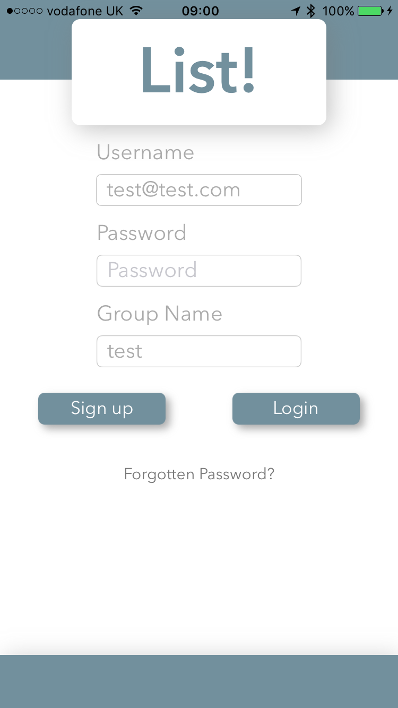

List Instruction Manual
After downloading List!, step one is to create and account and group. This is done by filling in an email address as a username, a password of at least 6 characters and choosing a group name. When choosing a group name try and choose something unique to your family/group.
After choosing Sign-up, you'll be presented with the group passcode screen. As the person starting the group you'll need to choose a passcode. This passcode can be anything as long as it is not blank. this is the passcode you will share with other members of your family/group to allow them to join.
If you are joining the group this is where you will be asked for the passcode, enabling you to join the group. You'll need to get the passcode from whomever set it up

WARNING! if you are setting up a new group and are asked for a passcode, instead of creating a new one, it means that there is already a group with that name in existence, please go back and choose a new group name

Once logged in you will be at the home screen. The top 4 lists in blue are the group lists and the bottom 2 in orange are your private lists
Choose any of the lists by tapping on it

The name of any list can be changed in the settings screen if you wish.
Also on the settings screen is a reminder of your group name and passcode. When getting a new family member to join, it is easiest just to show them this screen

The top list is designed for grocery shopping. each entry can also have an aisle attributed to it, allowing for sorting by the aisle.
When an item on the list has been purchased and you want to remove it, swipe left and a Edit/Remove button will appear. Edit allows you to update the item selected, while Remove, sends the item into the search screen where it can be re-used in the future.
Adding new items is accomplished in the box at the top of the screen. An item is mandatory while and aisle is optional

If you know you've added an item previously, it can be found by pressing the search at the top right of the shopping list screen.
in the search you can sort alphabetically, by aisle, and also by popularity. Popularity is calculated how often you move an item from the search screen into the shopping list, and then back again. each time you buy an item its popularity will increase and will appear higher on your list. perfect for those staple items you buy most weeks
to add an item back to your list, swipe left and you will see and Add/Delete button. Choose add and the item will be moved back to your list and its popularity will be increased
Items can be permanently deleted by swiping left on the search screen and choosing delete

The other group lists do not have an Aisle field but removed items are stored for future re-use
in the same way as the grocery list, items can be removed or edited by swiping left, and can be added back to the list or deleted by swiping left on the search screen

Private lists are only visible on your device. Private lists work the same as the non-grocery group lists except there is no search function. Swiping left allows you to edit the entry or delete it permanently


Finally, if you choose to one of the lists can be used as a group chat. at present there are no notifications if the chat is added to, you have to click into the list, but that is a future development

Check out our code. Feedback is always welcome
|
Check out our educational and fun videos |
take a look at our social media streams
|
take a look at our social media streams
|
email us to let us know what you think
|
Allan Wallace's Linked in page. Find out who is behind Gone To Plaid |